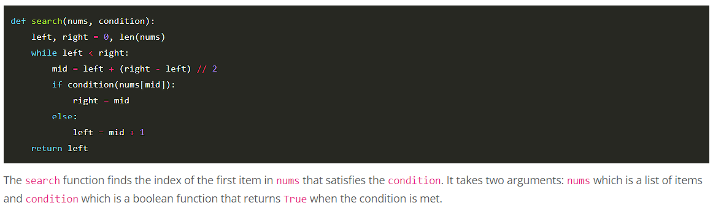
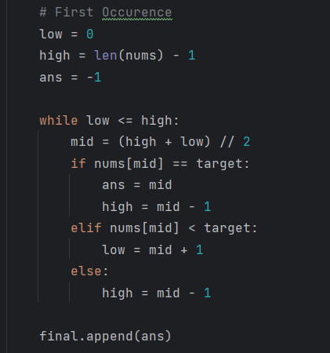
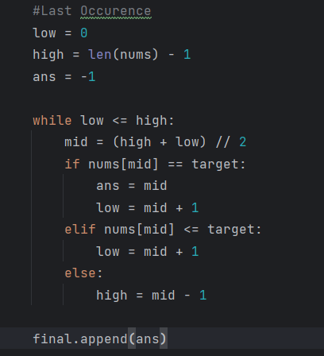

If you're trying to find the location of first occurence in array, use '<' (bisect left) in condition, else '<=' (bisect right)
General Template
Binary Search - Lower Bound (Bisect left): Smallest index such that arr[index] >= target
Binary Search - Upper Bound (Bisect right): Smallest index such that arr[index] > target
